Unreal twin: operator console (Health, Motions, Setup, Help, E-STOP)
2026-11-21 · UE 5.8.4 standalone game, level R1_Stand, captured unattended with
-PanelCapture=<dir> -R1Service=http://127.0.0.1:8766 -ShowcaseIdle=600 against a live behaviour service
started with --port 8766 --no-mirror (docs/service_api.md sections 4-7), at 1600×900 and 450×800.
Before the run the service was seeded through its API: a practice snapshot, two pre-flight ticks, walk speed scale 0.5, and a calibration capture from the practice twin.
Before

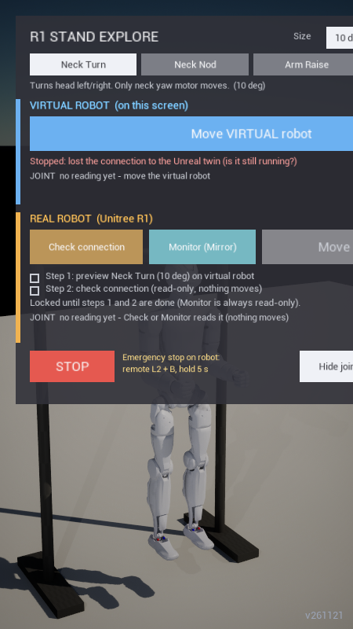
After
- The tab strip has a second row: Health, Motions, Setup and Help. The first row (Behaviours, Robustness, Walk) and the five HUD anchors on the Behaviours tab are unchanged. STOP, the remote e-stop note, Joints and Details stay at the bottom of every tab.
- E-STOP in the title row on every tab, also bound to the End key (Esc stays "quit"). It posts
/estop, which stops every job, the walk sandbox, the twin player and any recording. The toast repeats that the remote (L2+B, hold 5 s) is the real emergency stop. Against an older service without/estop, it falls back to/stop. - Voice goes to
POST /assistant/chat(sessionunreal). It falls back to/assistant/interpreton an older service. Status questions are answered and spoken. A pose suggestion shows a Preview pose button and is never started without a click. - Poses, motions and modes are only ever sent with
"target": "urlab". The panel has no control that offers the real robot for them.
Behaviours tab (unchanged anchors)
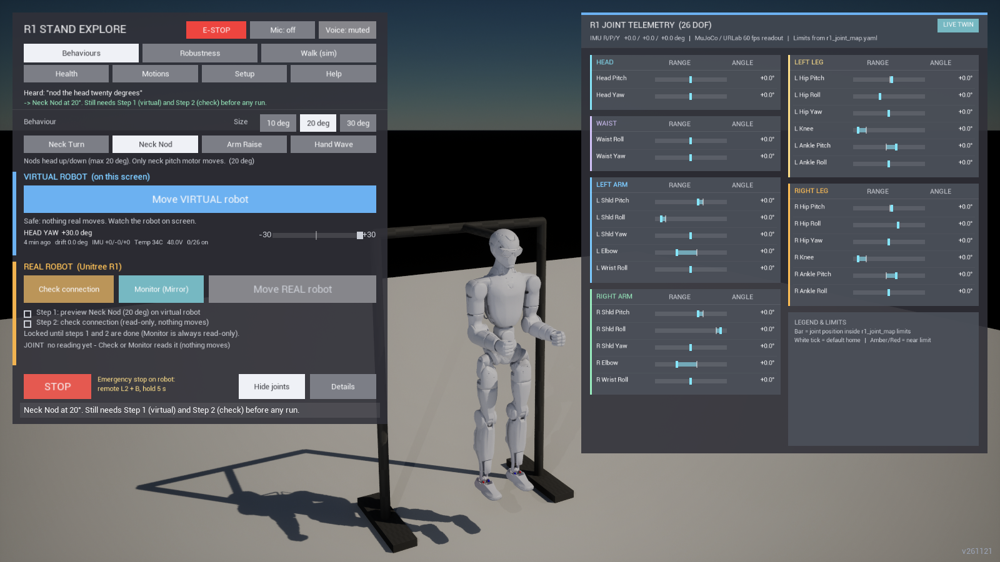
/assistant/chat: Neck Nod at 20° is selected and nothing starts. The five anchors (virtual robot, Check/Monitor, Move REAL robot, STOP, Details) are where they were.Health
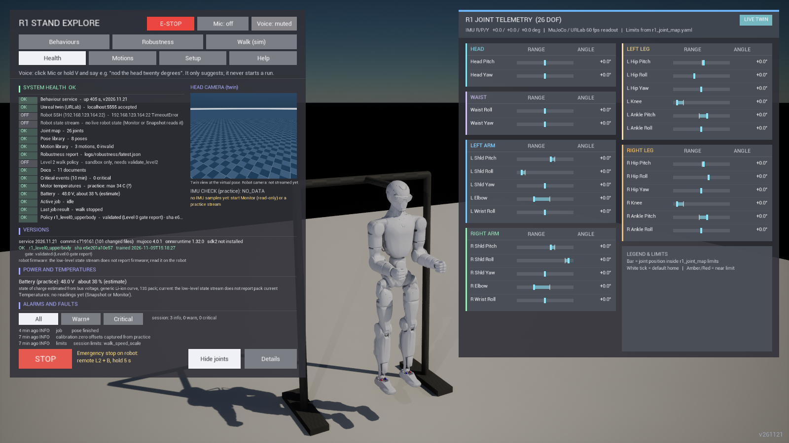
/healthrows show OK, OFF (optional) or FAIL as a word as well as a colour. Robot SSH and the state stream are OFF because no robot is connected.- The head camera is the twin's
head_rgbdPNG, about 4 Hz, decoded into a transient texture. - The IMU check reads
no_data(no stream was running). - Versions show the Level 0 policy gate and sha.
- The battery figure is labelled "estimate" with its assumption.
- Events come with All / Warn+ / Critical filters.
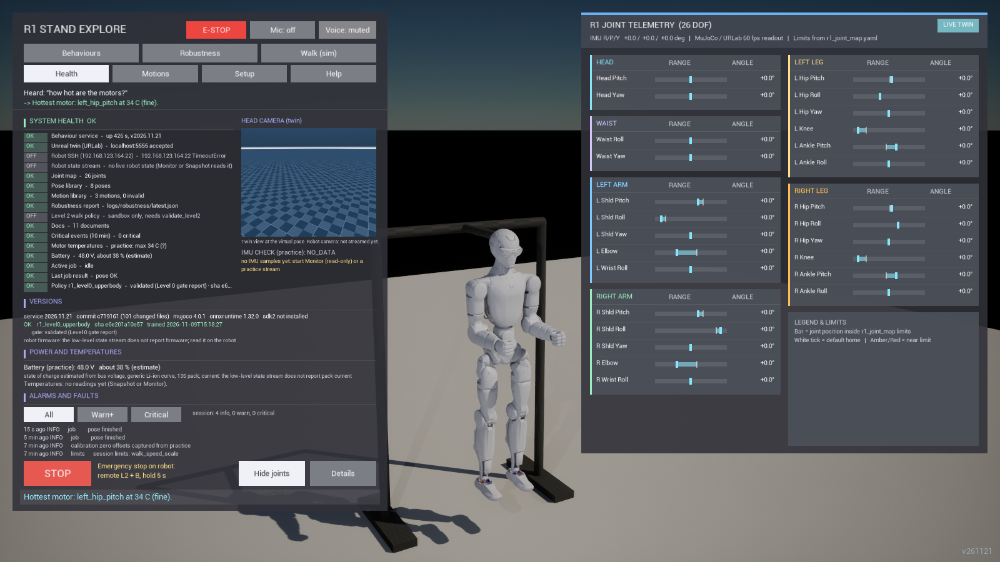
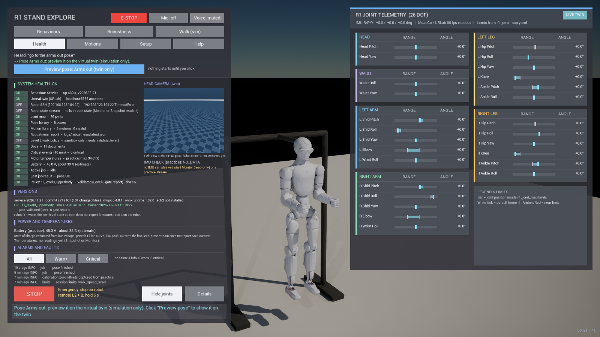
Motions
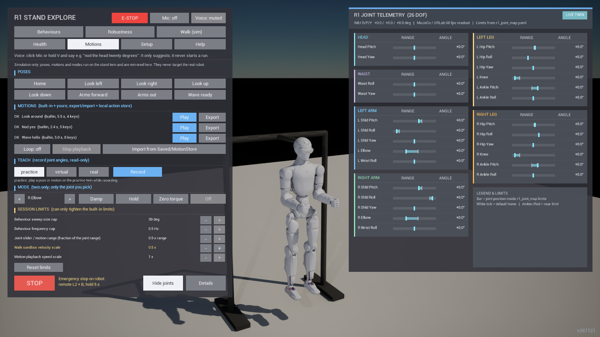
- Eight poses and three built-in motions, each with Play and Export. Export writes the store package to
Saved/MotionStore/<name>.json, and Import reads that folder back. - Teach mode can record from practice, virtual or real (read-only).
- Modes (Damp, Hold, Zero torque, Off) apply to the one joint you pick.
- Session limits have −/+ steppers. Walk scale 0.5 is shown tightened (amber), and + is only enabled below the built-in maximum.
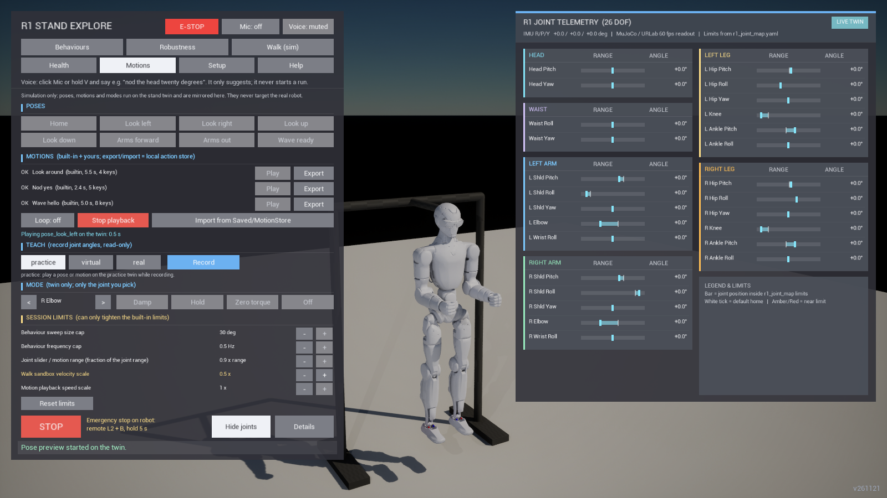
POST /poses/preview {"name":"look_left","target":"urlab"} the Play/pose buttons lock and the player line shows "Playing pose_look_left on the twin".Setup
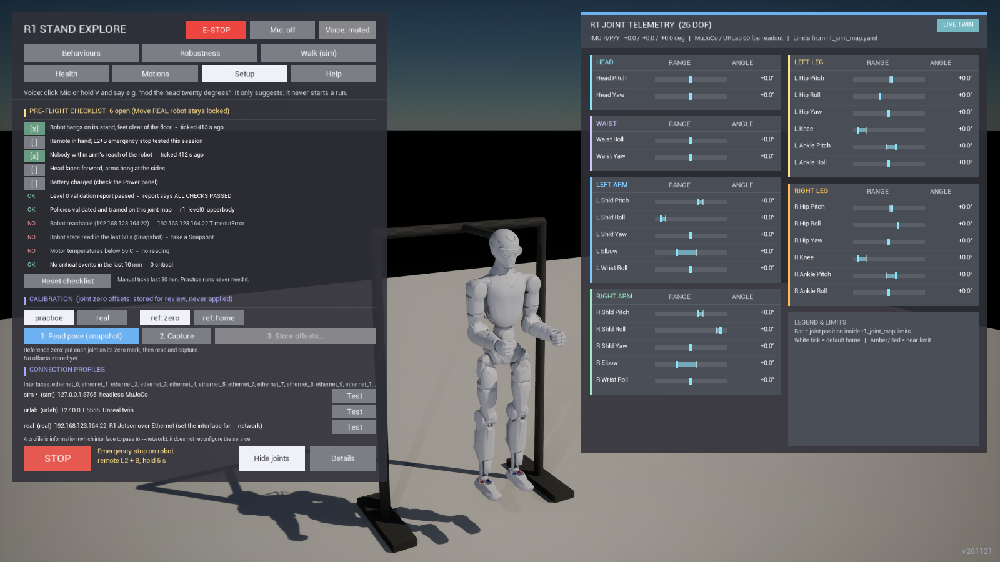
- Pre-flight: two manual items are ticked (from the seed), and each shows how long ago it was ticked. The automatic items come from the service, with robot reachable, fresh state and temperatures marked NO. The header says Move REAL robot stays locked.
- Calibration: source and reference chips, then Read pose (a 0 % power snapshot), Capture, and Store, which needs a second confirming click and is never applied.
- Connection profiles: the profiles, with a Test button each.
Help
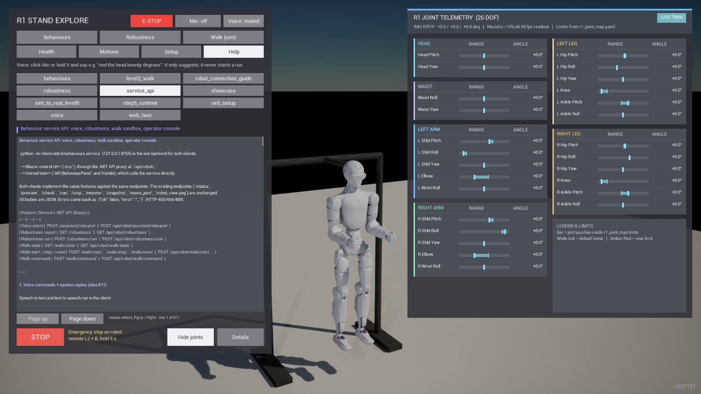
docs/*.md list, with service_api open as wrapped plain text: headings in the accent colour and code in cyan. It scrolls with the mouse wheel, PgUp/PgDn or the Page buttons.450×800 (scaled panel)
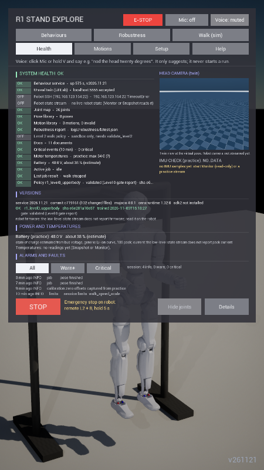
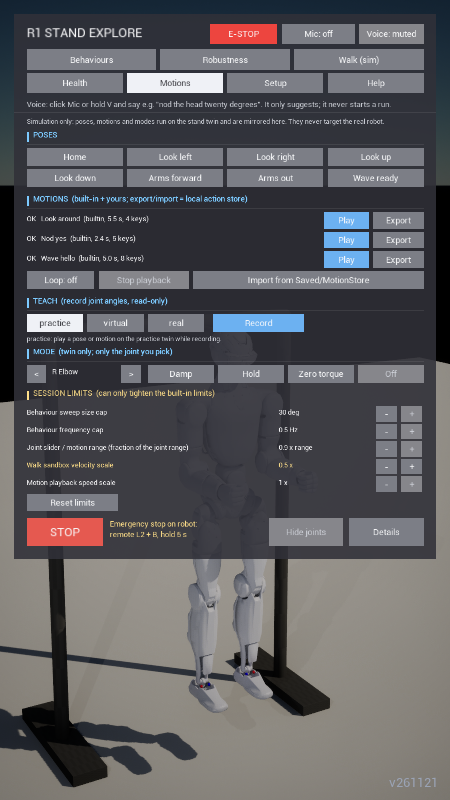
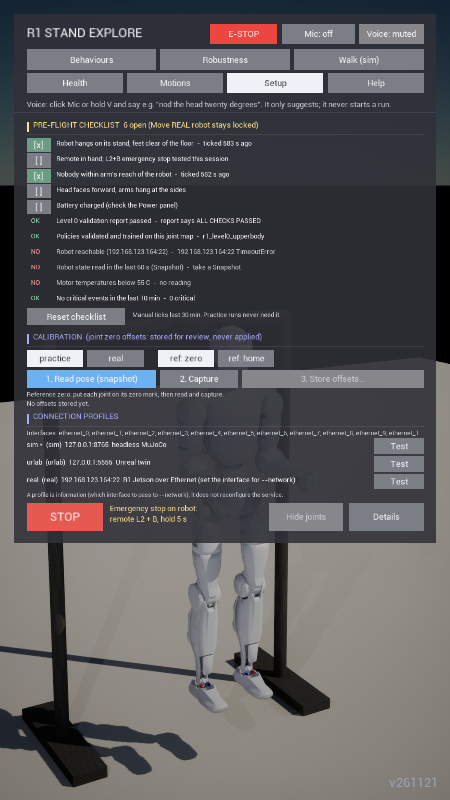
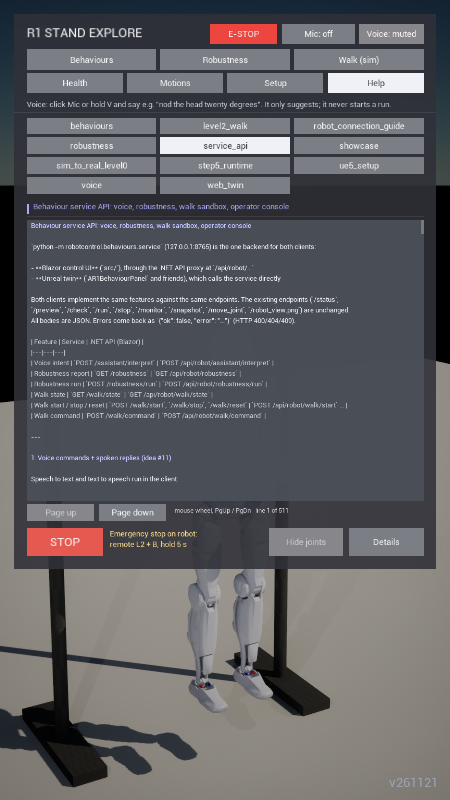
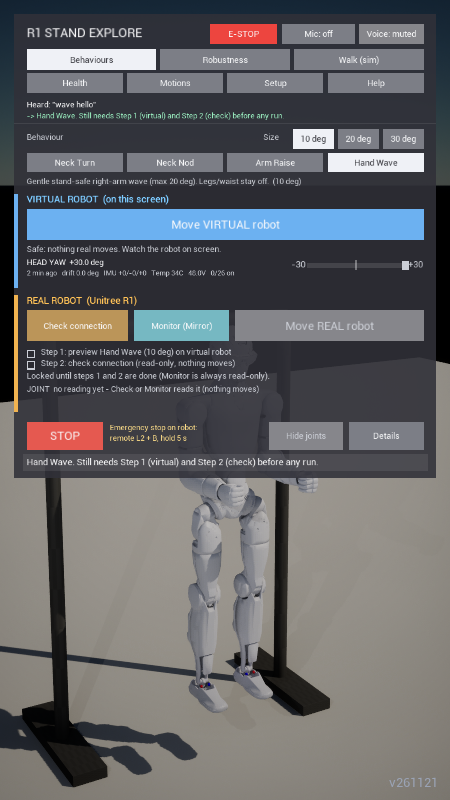
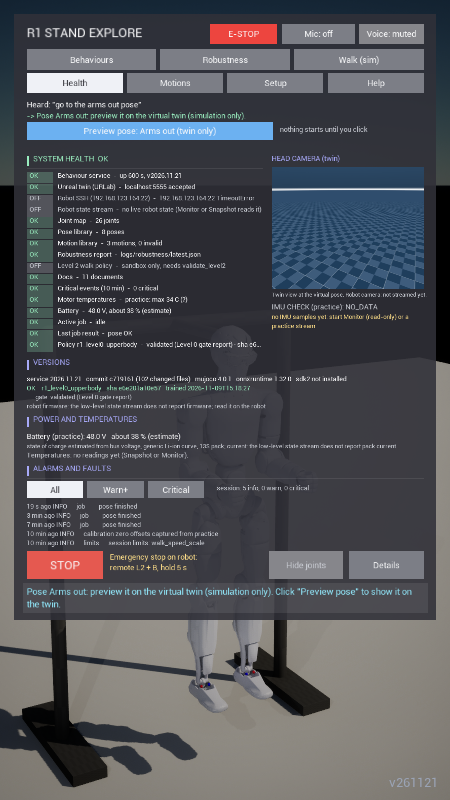
At 450×800 the whole panel is drawn scaled down so every control is present. The smallest text (health row details, version lines) is hard to read at this size.
Not verified
- The twin moving during a pose, motion or mode. The capture service ran with
--no-mirror(as instructed, to stay off the Unreal port other work used), so the player simulated headless: the Motions shot shows "Playing pose_look_left on the twin" while the Unreal robot stays still. With the mirror enabled, the same path pushes poses through URLab puppet mode, the way the walk sandbox does. This run did not check it. - Clicks on the new buttons. The unattended capture drives tabs, a pose preview and the assistant through code, not mouse clicks. The click paths reuse the existing hit-test and
HandleClickdispatch, but nobody clicked them in this run: E-STOP, the End key, motion Play/Export/Import, record, modes, limit steppers, pre-flight ticks, calibration store, network Test, the doc chips and scrolling. - The real robot. No robot was connected. Robot SSH, the state stream and the robot pre-flight items show OFF/NO, and the head camera is the twin's
head_rgbdview (the robot camera is not streamed). - A real microphone. The phrases were injected as heard speech, and spoken replies are muted in capture runs.